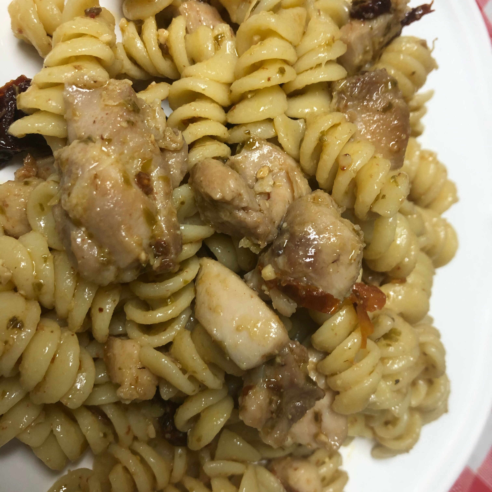

Pesto Pasta With Chicken

Ingredients
- 1 (16 ounce) package bow tie pasta
- 1 teaspoon olive oil
- 2 cloves garlic, minced
- 2 boneless skinless chicken breasts, cut into bite-size pieces
- crushed red pepper flakes to taste
- ⅓ cup oil-packed sun-dried tomatoes, drained and cut into strips
- ½ cup pesto sauce
Directions
- Bring a large pot of lightly salted water to a boil. Add pasta and cook for 8 to 10 minutes or until al dente; drain.
- Heat oil in a large skillet over medium heat. Saute garlic until tender, then stir in chicken. Season with red pepper flakes. Cook until chicken is golden, and cooked through.
- In a large bowl, combine pasta, chicken, sun-dried tomatoes and pesto. Toss to coat evenly.